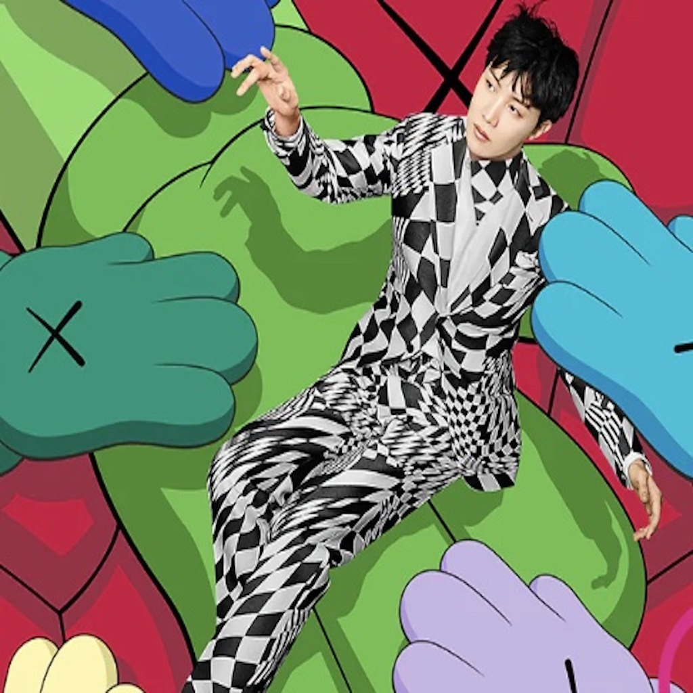

| NAME | ABOUT | PHOTO |
|---|---|---|
| Jungguk Jeon | Jungkook, who recently has been refered to as JK, is the youngest member of the band, and he is commonly referred to as the golden makne (meaning golden youngest). His roles are center, main vocalist, lead dancer, and sub rapper. He was responsible for releasing 3 solo tracks and has also directed and produced various music videos for the band. In his spare time, he uses his wide set of skills to do boxing, painting, and playing video games. From 2019-2021, he was the most searched person on the Top 50 Google World Wide Chart. (Update: Jungkook has been booked and busy recently! He performed at the World Cup opening in Qatar is now the Global Ambassidor for Calvin Klein and has been doing some secret work for his upcoming solo album!) | |
| Taehyung Kim | Taehyung, commonly known as V, is the second youngest member of the group. His roles are: vocalist and lead dancer. Not only is he a performer, but he has written multiple OSTs (original sound track) for popular Korean-dramas, such as Parasite and Itaewon Class. He has also acted in 2 shows and modeled. V has also released 3 solo tracks. Known for the creation of the phrase “I Purple You”, whch is now a symbol for BTS and fans. Unicef uses this phrase in their anti-bullying champaign. (Update: V has been focusing on his modeling carrer during the break; he is now the Brand Ambassidor for Celine and recently was on a show called "Jinny's Kitchen" with some of his actor friends!) | |
| Jimin Park | Jimin is the third youngest of the band. His roles are: main dancer and lead vocalist. He has released 3 solo tracks which have all charted on multiple Billboard and iTunes charts. His self-written and produced single “Friends” was in the Marvel movie “Eternals” and sung for the new drama “Our Blues”. Jimin is well known for his charming personality, which has gotten him recognition from lots of high-fashion designers. (Update: Jimin has been super busy! He just recently has released a new solo album called "Face" which landed him on the Billboard Hot 100!! Like the other members, he is now the Global Ambassidor for Dior, Cartier, and Tiffiany and Co.) | |
| Namjoon Kim | Namjoon, commonly known as RM, is the leader of the band. His other roles consist of: main rapper and spokesperson of the group. At a young age, he learned english by watching the show Friends. He is credited with producing and writing over 200 songs and is now a member of the American and Korean Music Copyright Associations. If a BTS song is released, RM has had a huge part of the making. Outside of the band, he has collaborated with people like Wale, Nas, Fall Out Boy, and Balming Tiger. (Update: RM has recently released a new solo album called "Indigo" and is now the first EVER Global Ambassidor for Bottega Veneta!) | |
| Hoseok Jung | Ho-seok, known as J-Hope is the main dancer, main rapper, and sub vocalist in the band. His stage name was chosen to show his desire to respresent hope for their fans, as a play on words pertaining to Pandoras Box. (the last thing in the box was hope) He was the third member to join the group and had been credited for 140 songs. Along with RM, J-Hope is one of the producers and writers for the band. He was the first member to to enter the Billboard hot 100 as a solosist in 2019 and just in 2022 headlined for Lalapolooza. (Update: J-Hope also released a new album called "Jack-In-The-Box" and is the Global Ambassidor for Louis Vuitton!) |  |
| Yoongi Min | Yoongi is mostly known as Suga (shortened version of shooting guard) and is the lead rapper for the band. He has produced over 150 songs for BTS and other musicians, such as PSY, Halsey, and MAX. Outside of the band activities, Suga produces and writes songs for webtoons and Samsung ads. He also goes by Agust D which is a rearrangement of Suga's name along with a nod to his hometown Daegu. He makes mixtapes and discusses his struggles with mental health as a way to seperate his dark side from his public persona. (Update: Suga is soon releasing a new solo album called "D-Day" and is going on tour. *I got tickets!!!* He is also the new Global Ambassador for Valentino and the NBA!). | |
| Seokjin Kim | Seok-jin known as Jin is the oldest of the group. His roles are: lead vocalist and visual. Jin is considered a tenor and plays the piano and the guitar. He also writes songs for BTS, but in his spare time he sings for OSTs like "Jirisan" and "Cliffhanger". One of his 3 solo songs “Moon” was placed in the Rolling Stones as the Top 5 Best Boy Band Songs of All Time. Jin was actually spotted on a bus stop for his good looks and thought the agency was a scam. (Update: Jin has also release a new single called "The Astronaut" which was co-written by Coldplay!) |